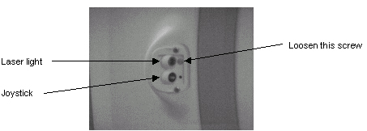
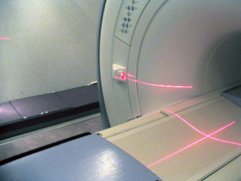

Illustration 1: Coronal Light Adjustment

Make sure the Coronal laser light aligns with the light on the opposite side of the magnet.
Move the laser on the right side of magnet to align with the left. (Illustration 2 shows that the laser light from the right side needs to be moved up.)
Illustration 2: Alignment Light Position
